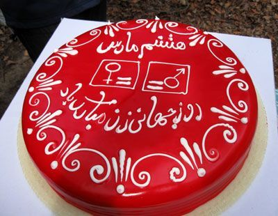

تغییر برای برابری
تغییر برای برابریرئیس کانون مدافعان حقوق بشر: مساله یک آپارتمان نیست بلکه باید به قانون احترام بگذارند. نه به خاطر دفتر بلکه به خاطر نفس عمل من تا آخرین لحظه به دنبال بازگشایی کانون خواهم بود.
پذيرش > واژه كليدها > صفحه بندی > گزارش ویژه
گزارش ویژه
مقالهها
-
 دیداراعضای کمپین حمایت از کانون مدافعان حقوق بشر با وکلا/ وکلای مدافع حقوق بشر باید از مصونیت برخوردار باشند
دیداراعضای کمپین حمایت از کانون مدافعان حقوق بشر با وکلا/ وکلای مدافع حقوق بشر باید از مصونیت برخوردار باشند
25 ژانويه 2009 -
محمد شریف پس از دیدار با موکل خود هانا عبدی: پس از یک سال و نیم حبس و انتقال های مداوم می توان حدس زد هانا در چه وضعیتی است
27 فوريه 2009, بوسيلهى pariدکتر محمد شریف پس از دیدار با موکل خود هانا عبدی:
پس از یک سال و نیم حبس و انتقال های مداوم می توان حدس زد هانا در چه وضعیتی است
تغییر برای برابری: روز گذشته هانا عبدی از فعالان کرد کمپین یک میلیون امضا پس از گذراندن دوران محکومیت خود که بر اساس رای دادگاه تجدید نظر 18 ماه اعلام شده بود، از زندان محل تبعید خود آزاد شده و به آغوش خانواده اش باز گشت.
هانا عبدی از یازدهم مهرماه سال 1386 در سنندج بازداشت و در دادگاه بدوی به 5 سال حبس در شهرستان گرمی واقع در منطقه مرزی ارومیه، محكوم شده بود که این محکومیت در دادگاه تجدیدنظر به ۱۸ ماه حبس کاهش یافت. دکتر (...) -
این بار دفاعیه موکلان برای وکلایشان
20 ژانويه 2009کانون مدافعان و ریاست آن را از منظر موکلان و مدافعانش ببینید: 18 نوشته و روایت در باب مدافعان حقوق مان
-

گرامی داشت 8 مارس در شهر رشت
9 مارس 2009کمپین رشت: ۸۶ سال از اولین مراسم بزرگداشت هشت مارس در شهر رشت میگذرد. در این دهها سال، فعالان زنان این شهر هرگز از بزرگداشت این روز حتی زیر چکمههای استبداد و سرکوب غفلت نکردهاند. امسال نیز فعالان زنان این شهر علیرغم همهی فشارهای امنیتی، مجموعهی متنوعی از برنامههای مختلف برای گرامیداشت این روز تدارک دیده و به اجرا گذاشتند.
گلگشت به مناسبت هشت مارس
روز جمعه ۱۶ اسفند جمعی از زنان و مردان رشت که همچون بقیهی زنان کشور برخلاف همهی کشورهای همجوار، حتی افغانستان، از امکان برگزاری مراسم روز جهانی زن در سطح خیابانهای شهر محروم بودهاند با برگزاری (...) -
تفهیم اتهام نفیسه آزاد/ امضاهای کمپین را به وی بازگرداندند
6 آوريل 2009, بوسيلهى pariتغییر برای برابری - دوشنبه 17 فروردین جلسه آخرین دفاع نفیسه آزاد فعال کمپین یک میلیون امضا برگزار شد. وی که به همراه وکیل خود زهرا ارزنی در دادیاری 2 امنیت حاضر شده بود مورد بازپرسی قاضی سبحانی قرار گرفت. دراین جلسه ضمن استراداد اموال برده شده که درتفتیش از منزل نفیسه آزاد برده بودند، اتهام اقدام علیه امنیت از طریق تبلیغ علیه نظام نیز مجددا به وی تفهیم وآخرین دفاع ازاواخذ گردید.
نفیسه آزاد روز 11 بهمن به همراه دیگر فعالان کمپین برای جمع آوری امضا به کوهستان توچال رفته بود که بازداشت و مدت 6 روز در بازداشتگاه وزرا بود که ضمن بازجویی نیز به این (...) -
بی خبری نگران کننده و ادامه بازداشت های دلبخواهی
22 مه 2009, بوسيلهى pariتغییر برای برابری - از روزجهانی کارگر تاکنون تعدادی از بازداشت شدگان آن روز آزاد شده و تعداد زیادی نیز همچنان در بازداشت هستند. از میان فعالان کمپین یک میلیون امضا جلوه جواهری، امیر یعقوبعلی، کاوه مظفری و پوریا پشتاره همچنان در بند هستند.
امیر وکاوه از زمان بازداشت تا کنون تماسی با خانواده های خود نگرفته اند و تنها خانواده پوریا موفق به دیدار کوتاهی با فرزندشان شدند. با توجه به برخی اخبار رسیده نسبت به ضرب و شتم فعالان دانشجویی و کارگری در زندان ، حتی برخورد فیزیکی با یکی از زندانیان زن بازداشت شده در روز کارگر، و عدم تماس آنها با خانواده ها ، نگرانی (...) -
تشکیل دادگاه سارا ایمانیان، ناهید کشاورز و محبوبه حسین زاده
15 آوريل 2009, بوسيلهى pariتغییر برای برابری - امروز 26 فروردین دادگاه ناهید کشاورز ، محبوبه حسین زاده و سارا ایمانیان در شعبه 28 دادگاه انقلاب تشکیل شد. هرسه آنها در 13 فروردین 1386 هنگام جمع اوری امضا در پارک لاله بازداشت شده بودند.
سارا ایمانیان وکیل نداشت و به تنهایی از خود دفاع کرد. محبوبه حسین زاده در سفر بود و وکیلش نسرین ستوده از دادگاه تقاضای مهلت نمود. پرونده دیگر ناهید کشاورز که مربوط به 13 اسفند بود نیز دراین دادگاه رسیدگی شد.
نسرین ستوده وکیل ناهید کشاورز درباره دادگاه وی چنین توضیح داد:« دادگاه موکلم ناهید کشاورز بابت دو اتهام اقدام علیه امنیت کشور از طریق اجتماع و (...)